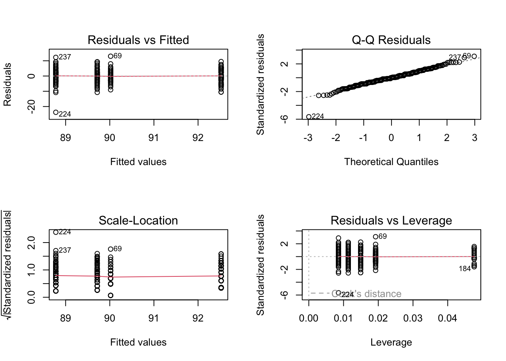

library(car)Loading required package: carDatalibrary(MASS)
library(DescTools)
Attaching package: 'DescTools'The following object is masked from 'package:car':
RecodeImport libraries.
library(car)Loading required package: carDatalibrary(MASS)
library(DescTools)
Attaching package: 'DescTools'The following object is masked from 'package:car':
RecodeSet path.
setwd("/Users/c2cypher/codebase/msda/sta-6443-902-data_analytics_algorithms/HW2")Exercise 1: Analysis of Variance The heartbpchol.csv data set contains continuous cholesterol (Cholesterol) and blood pressure status (BP_Status) (category: High/ Normal/ Optimal) for alive patients. For the heartbpchol data set, consider a one-way ANOVA model to identify differences between group cholesterol means. The normality assumption is reasonable, so you can proceed without testing normality.
Importing Data
heart = read.csv("data/heartbpchol.csv")
heart$Cholesterol = as.numeric(heart$Cholesterol)
heart$BP_Status = as.factor(heart$BP_Status)
str(heart)'data.frame': 541 obs. of 2 variables:
$ Cholesterol: num 221 188 292 319 205 247 202 150 228 280 ...
$ BP_Status : Factor w/ 3 levels "High","Normal",..: 3 1 1 2 2 1 3 2 1 1 ...Balance Check
table(heart$BP_Status)
High Normal Optimal
229 245 67 Since the number of observations for each group is different, the distribution of BP_Status is unbalanced.
boxplot(Cholesterol ~ BP_Status, heart,
main = "Cholesterol Distribution by BP Status",
xlab = "BP Status",
ylab = "Cholesterol",
col = "red",
horizontal = FALSE)One-Way ANOVA (Cholesterol with BP_Status)
aov.heart = aov(Cholesterol ~ BP_Status, heart)
summary(aov.heart) Df Sum Sq Mean Sq F value Pr(>F)
BP_Status 2 25211 12605 6.671 0.00137 **
Residuals 538 1016631 1890
---
Signif. codes: 0 '***' 0.001 '**' 0.01 '*' 0.05 '.' 0.1 ' ' 1Since the p-value (0.00137) is below the significance level (0.05), we reject the null hypothesis. At least one group in BP Status has a different mean of Cholesterol; therefore, BP Status has a significant effect on Cholesterol.
R-Square
lm.res = lm(Cholesterol ~ BP_Status, heart)
summary(lm.res)$r.squared[1] 0.02419833This means that 2.4% of the total variation of Cholesterol can be explained by the BP_Status.
Equal-Variance Assumption (Levene Test)
leveneTest(aov.heart)Levene's Test for Homogeneity of Variance (center = median)
Df F value Pr(>F)
group 2 0.1825 0.8332
538 Since our p-value (0.8332) is greater than the significance level (0.05), we do not reject the null hypothesis. All groups in BP_Status have equal variance.
Normality Check
par(mfrow=c(2,2))
plot(aov.heart)The Q-Q Plot shows that most of the data follows a normal distribution with some deviation at the tail. Despite the slight deviation, we can assume normality. On the Residuals vs. Fitted plot, group 1 shows less variation than groups 2 and 3; however, the equal variance assumption can be trusted since the Levene Test calculated a p-value of 0.8332.
ScheffeTest(aov.heart)
Posthoc multiple comparisons of means: Scheffe Test
95% family-wise confidence level
$BP_Status
diff lwr.ci upr.ci pval
Normal-High -11.543481 -21.35092 -1.736038 0.0159 *
Optimal-High -18.646679 -33.46702 -3.826341 0.0089 **
Optimal-Normal -7.103198 -21.81359 7.607194 0.4958
---
Signif. codes: 0 '***' 0.001 '**' 0.01 '*' 0.05 '.' 0.1 ' ' 1Since the p-values for Normal-High (0.0159) and Optimal-High (0.0089) are less than the significance level (0.05), we reject the null hypothesis. The Normal-High group’s means and the Optimal-High group’s means are not equal.
Since the p-value for Optimal-Normal (0.4958) is greater than the significance level (0.05), we do not reject the null hypothesis. The Optimal-Normal group’s means are equal.
Effects of BP_Status on Cholesterol:
Normal < High, the mean value of Normal Cholesterol is less than the mean value of High Cholesterol.
Optimal < High, the mean value of Optimal Cholesterol is less than the mean value of High Cholesterol.
Optimal = Normal, the mean value of Optimal Cholesteral is equal to the mean value of Normal Cholesterol.
Exercise 2: Analysis of Variance For this problem use the bupa.csv data set. Check UCI Machine Learning Repository for more information (http://archive.ics.uci.edu/ml/datasets/Liver+Disorders). The mean corpuscular volume and alkaline phosphatase are blood tests thought to be sensitive to liver disorder related to excessive alcohol consumption. We assume that normality and independence assumptions are valid.
Importing Data
bupa = read.csv("data/bupa.csv")
bupa$mcv = as.numeric(bupa$mcv)
bupa$alkphos = as.numeric(bupa$alkphos)
bupa$drinkgroup = as.factor(bupa$drinkgroup)
str(bupa)'data.frame': 345 obs. of 3 variables:
$ mcv : num 85 85 86 91 87 98 88 88 92 90 ...
$ alkphos : num 92 64 54 78 70 55 62 67 54 60 ...
$ drinkgroup: Factor w/ 5 levels "1","2","3","4",..: 1 1 1 1 1 1 1 1 1 1 ...Balance Check
table(bupa$drinkgroup)
1 2 3 4 5
117 52 88 67 21 Since the number of observations for each group is different, the distribution of BP_Status is unbalanced.
boxplot(mcv ~ drinkgroup, bupa,
main = "Mean Corpuscular Volume Distribution by Drink Group",
xlab = "Drink Group",
ylab = "Mean Corpuscular Volume",
col = "red",
horizontal = FALSE)One-Way ANOVA (MCV with Drink Group)
aov.mcv <- aov(mcv ~ drinkgroup, bupa)
summary(aov.mcv) Df Sum Sq Mean Sq F value Pr(>F)
drinkgroup 4 733 183.29 10.26 7.43e-08 ***
Residuals 340 6073 17.86
---
Signif. codes: 0 '***' 0.001 '**' 0.01 '*' 0.05 '.' 0.1 ' ' 1Since the p-value (7.43e-08) is less than the significance level (0.05), we reject the null hypothesis. At least one group in drinkgroup has a different mean of mcv; therefore, drinkgroup has a significant effect on mcv.
R-Square
lm.res_mcv <- lm(mcv ~ drinkgroup, bupa)
summary(lm.res_mcv)$r.squared[1] 0.1077214This means that 10.8% of the total variation of mcv can be explained by the drinkgroup.
Equal-Variance Assumption (Levene Test)
leveneTest(aov.mcv)Levene's Test for Homogeneity of Variance (center = median)
Df F value Pr(>F)
group 4 0.3053 0.8744
340 Since our p-value (0.8744) is greater than the significance level (0.05), we do not reject the null hypothesis. All groups in drinkgroup have equal variance.
Normality Check
par(mfrow=c(2,2))
plot(aov.mcv)
The Q-Q Plot shows that most of the data follows a normal distribution, so we can assume normality. On the Residuals vs. Fitted plot, all groups are displaying similar variances, and the Levene Test calculated a p-value of 0.8744; therefore, the equal variance assumption can be trusted.
Balance Check
table(bupa$drinkgroup)
1 2 3 4 5
117 52 88 67 21 boxplot(alkphos ~ drinkgroup, bupa,
main = "Alkaline Phosphatase Distribution by Drink Group",
xlab = "Alkaline Phosphatase",
ylab = "Drink Group",
col = "red",
horizontal = FALSE)When looking at the statistical significance, the distribution of Drink Group is clearly unbalanced. The observations for each group is different.
One-Way ANOVA (Alkphos with Drink Group)
aov.alkphos <- aov(alkphos ~ drinkgroup, bupa)
summary(aov.alkphos) Df Sum Sq Mean Sq F value Pr(>F)
drinkgroup 4 4946 1236.4 3.792 0.00495 **
Residuals 340 110858 326.1
---
Signif. codes: 0 '***' 0.001 '**' 0.01 '*' 0.05 '.' 0.1 ' ' 1Since the p-value (0.00495) is less than the significance level (0.05), we reject the null hypothesis. At least one group in drinkgroup has a different mean of alkphos; therefore, drinkgroup has a significant effect on alkphos.
R-Square
lm.alkphos <- lm(alkphos ~ drinkgroup, bupa)
summary(lm.alkphos)$r.squared[1] 0.04270721This means that 4.3% of the total variation of alkphos can be explained by the drinkgroup.
Equal-Variance Assumption (Levene Test)
leveneTest(aov.alkphos)Levene's Test for Homogeneity of Variance (center = median)
Df F value Pr(>F)
group 4 0.8089 0.5201
340 Since our p-value (0.5201) is greater than the significance level (0.05), we do not reject the null hypothesis. All groups in drinkgroup have equal variance.
Normality Check
par(mfrow=c(2,2))
plot(aov.alkphos)The Q-Q Plot shows that most of the data follows a normal distribution with some deviation at the tail. Despite the slight deviation, we can assume normality. On the Residuals vs. Fitted plot, group 2 shows less variation than the rest of the groups; however, since the Levene Test calculated a p-value of 0.5201, the equal variance assumption can be trusted.
mcv
ScheffeTest(aov.mcv)
Posthoc multiple comparisons of means: Scheffe Test
95% family-wise confidence level
$drinkgroup
diff lwr.ci upr.ci pval
2-1 1.241452991 -0.94020481 3.423111 0.5410
3-1 0.938131313 -0.90892674 2.785189 0.6495
4-1 3.744610282 1.73913894 5.750082 1.9e-06 ***
5-1 3.746031746 0.64379565 6.848268 0.0081 **
3-2 -0.303321678 -2.59291786 1.986275 0.9966
4-2 2.503157290 0.08395442 4.922360 0.0380 *
5-2 2.504578755 -0.87987039 5.889028 0.2646
4-3 2.806478969 0.68408993 4.928868 0.0025 **
5-3 2.807900433 -0.37116998 5.986971 0.1151
5-4 0.001421464 -3.27222796 3.275071 1.0000
---
Signif. codes: 0 '***' 0.001 '**' 0.01 '*' 0.05 '.' 0.1 ' ' 1Since the p-values of 4-1 (1.9e-06), 5-1 (0.0081), 4-2 (0.0380), and 4-3 (0.0025) are less than the significance level (0.05), we reject the null hypothesis. The means of these drinkgroup pairs are not equal and have a significant effect on mcv.
Since the p-values of 2-1 (0.5410), 3-1 (0.6495), 3-2 (0.9966), 5-2 (0.2646), 5-3 (0.1151), and 5-4 (1.0000) are greater than the significance level (0.05), we do not reject the null hypothesis. The means of these drinkgroup pairs are equal.
The Scheffe Test identified significant pairwise differences between these drinkgroup pairs:
4 > 1 (mean mcv of 4 is greater than mean mcv of 1 by +3.74)
5 > 1 (mean mcv of 5 is greater than mean mcv of 1 by +3.75)
4 > 2 (mean mcv of 4 is greater than mean mcv of 2 by +2.50)
4 > 3 (mean mcv of 4 is greater than mean mcv of 3 by +2.81)
drinkgroup pairs with equal mean values: 2-1, 3-1, 3-2, 5-2, 5-3, and 5-4
alkphos
ScheffeTest(aov.alkphos)
Posthoc multiple comparisons of means: Scheffe Test
95% family-wise confidence level
$drinkgroup
diff lwr.ci upr.ci pval
2-1 -2.645299 -11.9663647 6.675766 0.9419
3-1 -4.056138 -11.9476367 3.835360 0.6389
4-1 -1.148743 -9.7170578 7.419571 0.9965
5-1 12.572650 -0.6815582 25.826857 0.0734 .
3-2 -1.410839 -11.1930681 8.371390 0.9953
4-2 1.496556 -8.8394138 11.832525 0.9952
5-2 15.217949 0.7579944 29.677903 0.0329 *
4-3 2.907395 -6.1604467 11.975236 0.9117
5-3 16.628788 3.0463078 30.211268 0.0069 **
5-4 13.721393 -0.2651729 27.707959 0.0578 .
---
Signif. codes: 0 '***' 0.001 '**' 0.01 '*' 0.05 '.' 0.1 ' ' 1Since the p-values of 5-2 (0.0329) and 5-3 (0.0069) are less than the significance level (0.05), we reject the null hypothesis. The means of these drinkgroup pairs are not equal and have a significant effect on alkphos.
Since the p-values of 2-1 (0.9419), 3-1 (0.6389), 4-1 (0.9965), 5-1 (0.0734), 3-2 (0.9953), 4-2 (0.9952), 4-3 (0.9117), and 5-4 (0.0578) are greater than the significance level (0.05), we do not reject the null hypothesis. The means of these drinkgroup pairs are equal.
The Scheffe Test identified significant pairwise differences between these drinkgroup pairs: 5 > 2 (mean alkphos of 5 is higher than mean alkphos of 2 by +15.22) 5 > 3 (mean alkphos of 5 is higher than mean alkphos of 3 by +16.63)
drinkgroup pairs with equal mean values: 2-1, 3-1, 4-1, 5-1, 3-2, 4-2, 4-3, 5-4
Similarities: The p-values of drinkgroup pairs 2-1, 3-1, 3-2, and 5-4 are greater than the significance level in both post-hoc tests; therefore, these pairs do not have any significant effect on mcv and alkphos.
Exercise 3: The psychology department at a hypothetical university has been accused of underpaying female faculty members. The data represent salary (in thousands of dollars) for all 22 professors in the department.This problem is from Maxwell and Delaney (2004).
Importing Data
psych = read.csv("data/psych.csv")
psych$salary = as.numeric(psych$salary)
str(psych)'data.frame': 22 obs. of 3 variables:
$ sex : chr "F" "F" "F" "F" ...
$ rank : chr "Assist" "Assist" "Assist" "Assist" ...
$ salary: num 33 36 35 38 42 37 39 38 40 44 ...Balance Check
table(psych$sex); table(psych$rank)
F M
10 12
Assist Assoc
10 12 Since the number of observations for each group is different, the distributions of sex and rank are unbalanced.
Two-Way ANOVA Type 1:
aov.psych1 = aov(salary ~ sex * rank, psych)
summary(aov.psych1) Df Sum Sq Mean Sq F value Pr(>F)
sex 1 155.15 155.15 17.007 0.000637 ***
rank 1 169.82 169.82 18.616 0.000417 ***
sex:rank 1 0.63 0.63 0.069 0.795101
Residuals 18 164.21 9.12
---
Signif. codes: 0 '***' 0.001 '**' 0.01 '*' 0.05 '.' 0.1 ' ' 1aov.psych2 = aov(salary ~ rank * sex, psych)
summary(aov.psych2) Df Sum Sq Mean Sq F value Pr(>F)
rank 1 252.22 252.22 27.647 5.33e-05 ***
sex 1 72.76 72.76 7.975 0.0112 *
rank:sex 1 0.63 0.63 0.069 0.7951
Residuals 18 164.21 9.12
---
Signif. codes: 0 '***' 0.001 '**' 0.01 '*' 0.05 '.' 0.1 ' ' 1Since both groups have p-values less than the significance value, we reject the null hypothesis. These groups have a significant effect on salary.
In addition, we can see the interaction between sex and rank result in a p-value greater than the significance level, so we do not reject the null hypothesis. The interaction between sex and rank does not have a significant effect on salary.
Two-Way ANOVA Type 3:
Anova(aov.psych1, type = 3)Anova Table (Type III tests)
Response: salary
Sum Sq Df F value Pr(>F)
(Intercept) 8140.2 1 892.2994 < 2e-16 ***
sex 28.0 1 3.0711 0.09671 .
rank 70.4 1 7.7189 0.01240 *
sex:rank 0.6 1 0.0695 0.79510
Residuals 164.2 18
---
Signif. codes: 0 '***' 0.001 '**' 0.01 '*' 0.05 '.' 0.1 ' ' 1Since rank has a p-value (0.01240) less than the significance level (0.05), we reject the null hypothesis. Rank has a significant effect on salary.
Since the p-values of sex (0.09671) and the interaction between sex and rank (0.79510) are greater than the significance level, we do not reject the null hypothesis. Sex and the interaction group do not have a significant effect on salary.
Variation Explained by model (Sex and Rank)
lm.psych1 = lm(salary ~ sex*rank, psych)
summary(lm.psych1)$r.squared[1] 0.6647566This means 66.5% of the salary variation can be explained by using the model.
Two-Way ANOVA Type 1:
aov.psych3 = aov(salary ~ rank + sex, psych)
summary(aov.psych3) Df Sum Sq Mean Sq F value Pr(>F)
rank 1 252.22 252.22 29.071 3.34e-05 ***
sex 1 72.76 72.76 8.386 0.00926 **
Residuals 19 164.84 8.68
---
Signif. codes: 0 '***' 0.001 '**' 0.01 '*' 0.05 '.' 0.1 ' ' 1aov.psych4 = aov(salary ~ sex + rank, psych)
summary(aov.psych4) Df Sum Sq Mean Sq F value Pr(>F)
sex 1 155.2 155.15 17.88 0.000454 ***
rank 1 169.8 169.82 19.57 0.000291 ***
Residuals 19 164.8 8.68
---
Signif. codes: 0 '***' 0.001 '**' 0.01 '*' 0.05 '.' 0.1 ' ' 1Since the p-values of sex (0.000454) and rank (0.000291) are less than the significance level (0.05), we reject the null hypothesis and conclude that both groups have a significant effect on salary. There’s at least one group in sex and rank whose mean values are not equal.
Two-Way ANOVA Type 3:
Anova(aov.psych3, type = 3)Anova Table (Type III tests)
Response: salary
Sum Sq Df F value Pr(>F)
(Intercept) 10227.6 1 1178.8469 < 2.2e-16 ***
rank 169.8 1 19.5743 0.0002912 ***
sex 72.8 1 8.3862 0.0092618 **
Residuals 164.8 19
---
Signif. codes: 0 '***' 0.001 '**' 0.01 '*' 0.05 '.' 0.1 ' ' 1Since the p-values of rank (0.0002912) and sex (0.0092618) are less than the significance level (0.05), we reject the null hypothesis and conclude that both groups have a significant effect on salary. There’s at least one group in sex and rank whose mean values are not equal.
Variation Explained by model
lm.psych3 = lm(salary ~ rank + sex, psych)
summary(lm.psych3)$r.squared[1] 0.6634627This means 66.3% of the salary variation can be explained by using the model.
par(mfrow=c(2,2))
plot(aov.psych3)The Q-Q Plot shows that most of the data follows a normal distribution, so we can assume normality. On the Residuals vs. Fitted plot, the groups are not displaying similar variances, and the Levene Test cannot be used for this two-way ANOVA because the distributions are unbalanced. The equal variance assumption cannot be trusted.
Based on the results from (a) and (b), we choose the two-way ANOVA - Type 3 with no interaction effect.
Post-HOC Test
TukeyHSD(aov.psych4) Tukey multiple comparisons of means
95% family-wise confidence level
Fit: aov(formula = salary ~ sex + rank, data = psych)
$sex
diff lwr upr p adj
M-F 5.333333 2.693648 7.973019 0.0004544
$rank
diff lwr upr p adj
Assoc-Assist 5.377778 2.738092 8.017463 0.0004193Since the p-values of rank and sex are less than the significance level, we reject the null hypothesis. Both rank and sex have a significant effect on salary. The means of M-F are not equal, and the means of Assoc-Assist are not equal.
M > F (Male salary average is greater than Female salary average by +5.33) Assoc > Assist (Assoc salary average is greater than Assist salary average by +5.37)
TukeyHSD(aov.psych3) Tukey multiple comparisons of means
95% family-wise confidence level
Fit: aov(formula = salary ~ rank + sex, data = psych)
$rank
diff lwr upr p adj
Assoc-Assist 6.8 4.160314 9.439686 3.34e-05
$sex
diff lwr upr p adj
M-F 3.52 0.8803145 6.159686 0.011649Since the p-values of rank and sex are less than the significance level, we reject the null hypothesis. Both rank and sex have a significant effect on salary. The means of M-F are not equal, and the means of Assoc-Assist are not equal.
M > F (Male salary average is greater than Female salary average by +3.52) Assoc > Assist (Assoc salary average is greater than Assist salary average by +6.80)
Exercise 4: Use the cars_new.csv. See HW1 for detailed information of variables.
Importing Data
## Importing Data ###
cars = read.csv("data/cars_new.csv")
cars$mpg_highway = as.numeric(cars$mpg_highway)
cars$cylinders = as.factor(cars$cylinders)
cars$origin = as.factor(cars$origin)
cars$type = as.factor(cars$type)
str(cars)'data.frame': 180 obs. of 4 variables:
$ type : Factor w/ 2 levels "Sedan","Sports": 1 1 1 1 1 2 1 1 1 1 ...
$ origin : Factor w/ 2 levels "Asia","USA": 1 1 1 1 1 1 2 2 2 2 ...
$ cylinders : Factor w/ 2 levels "4","6": 1 1 2 2 2 2 2 2 2 2 ...
$ mpg_highway: num 31 29 28 24 24 24 30 29 30 28 ...Balance Check
table(cars$type)
Sedan Sports
164 16 table(cars$origin)
Asia USA
104 76 table(cars$cylinders)
4 6
86 94 Since the number of observations for each group is different, the distributions of type, origin, and cylinders are unbalanced.
**Three-Way Anova (Type 3):
aov.cars <- aov(mpg_highway ~ cylinders + origin + type, cars)
Anova(aov.cars, type = 3)Anova Table (Type III tests)
Response: mpg_highway
Sum Sq Df F value Pr(>F)
(Intercept) 69548 1 6501.6715 < 2e-16 ***
cylinders 1453 1 135.8499 < 2e-16 ***
origin 1 1 0.0786 0.77948
type 108 1 10.1018 0.00175 **
Residuals 1883 176
---
Signif. codes: 0 '***' 0.001 '**' 0.01 '*' 0.05 '.' 0.1 ' ' 1Since the p-values of cylinders (< 2e-16) and type (0.00175) are less than the significance level (0.05), we reject the null hypothesis. These groups significantly affect mpg_highway. At least one group’s mean values are not equal.
Since the p-value of origin (0.77948) is greater than the significance level (0.05), we do not reject the null hypothesis. Origin does not have a significant effect on mpg_highway, so we will eliminate it from the model.
Variation Explained by the Model with cylinders and type
lm.cars <- lm(mpg_highway ~ cylinders + type, cars)
summary(lm.cars)$r.squared[1] 0.4572163This means that when looking at the variation of mpg_highway, only around 45.7% can be explained by the cylinders and type.
aov.cars2 <- aov(mpg_highway ~ cylinders + type + cylinders * type, cars)
Anova(aov.cars2, type = 3)Anova Table (Type III tests)
Response: mpg_highway
Sum Sq Df F value Pr(>F)
(Intercept) 85471 1 8358.838 < 2.2e-16 ***
cylinders 1558 1 152.397 < 2.2e-16 ***
type 198 1 19.392 1.844e-05 ***
cylinders:type 84 1 8.201 0.004696 **
Residuals 1800 176
---
Signif. codes: 0 '***' 0.001 '**' 0.01 '*' 0.05 '.' 0.1 ' ' 1Two-way ANOVA, Type 3, with the inclusion of cylinders, type, and its interaction, is the best model. We may reject the null hypothesis and draw the conclusion that they have a substantial impact on mpg_highway since all three of them have p-values below the significance level of 0.05.
Variation explained by the model
lm.cars2 <- lm(mpg_highway ~ cylinders + type + cylinders * type, cars)
summary(lm.cars2)$r.squared[1] 0.4813821This means that when looking at the variation of mpg_highway, only 48.1% can be explained by the cylinders and type and its interaction.
Normality Check
par(mfrow=c(2,2))
plot(aov.cars2)The Q-Q Plot shows that most of the data follows a normal distribution, so we can assume normality. On the Residuals vs. Fitted plot, the groups are not displaying similar variances, and the Levene Test cannot be used for this two-way ANOVA because the distributions are unbalanced. The equal variance assumption cannot be trusted.
Post-Hoc Test
TukeyHSD(aov.cars2) Tukey multiple comparisons of means
95% family-wise confidence level
Fit: aov(formula = mpg_highway ~ cylinders + type + cylinders * type, data = cars)
$cylinders
diff lwr upr p adj
6-4 -5.722662 -6.664343 -4.780981 0
$type
diff lwr upr p adj
Sports-Sedan -2.817931 -4.470787 -1.165075 0.0009407
$`cylinders:type`
diff lwr upr p adj
6:Sedan-4:Sedan -6.1723315 -7.469178 -4.875485 0.0000000
4:Sports-4:Sedan -5.2275641 -8.306639 -2.148489 0.0001079
6:Sports-4:Sedan -6.6025641 -9.681639 -3.523489 0.0000006
4:Sports-6:Sedan 0.9447674 -2.120956 4.010491 0.8546517
6:Sports-6:Sedan -0.4302326 -3.495956 2.635491 0.9834567
6:Sports-4:Sports -1.3750000 -5.521993 2.771993 0.8253946cylinders: Since the p-value of cylinders (0) is less than the significance level (0.05), we reject the null hypothesis. Cylinders have a significant effect on mpg_highway. 6 < 4 (The mean mpg_highway of 6 is less than the mean mpg_highway of 4 by -5.72 mpg.)
type: Since the p-value of type (0.0009407) is less than the significance level (0.05), we reject the null hypothesis. Type have a significant effect on mpg_highway. Sports < Sedan (The mean mpg_highway for Sports is less than the mean mpg_highway for Sedan cars by -2.82 mpg.)
cylinders and types interactions: Since the p-values of 6:Sedan-4:Sedan (0.0000000), 4:Sports-4:Sedan (0.0001079), and 6:Sports-4:Sedan (0.0000006) are less than the significance level (0.05), we reject the null hypothesis. These pairs have a significant effect on mpg_highway.
Since the p-values of 4:Sports-6:Sedan (0.8546517), 6:Sports-6:Sedan (0.9834567), and 6:Sports-4:Sports (0.8253946) are greater than the significance level (0.05), we do not reject the null hypothesis. These pairs do not have a significant effect on mpg_highway.
6:Sedan < 4:Sedan (The mean mpg_highway of 6:Sedan is less than than mean mpg_highway of 4:Sedan by -6.17 mpg).
4:Sports < 4:Sedan (The mean mpg_highway of 4:Sports is less than mean mpg_highway of 4:Sedan by -5.23 mpg).
6:Sports < 4:Sedan (The mean mpg_highway of 6:Sports is less than mean mpg_highway of 4:Sedan by -6.60 mpg).
cylinders:type pairs with equal mean values: 4:Sports-6:Sedan, 6:Sports-6:Sedan, and 6:Sports-4:Sports.
Additional comments - The mean mpg_highway of Sedans is greater than Sports car, so Sedans are more fuel efficient. - The mean mpg_highway of 4 cylinders is greater than 6 cylinders, so 4 cylinders is more fuel efficient. - 4 cylinder Sedan is the most fuel efficient car - 6 cylinder Sports is the least fuel efficient car